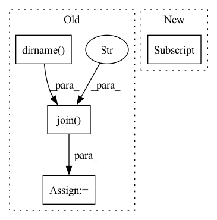

Pattern ID :4001

Before Change
self.feature_name["history_tim"] = "array of int"
self.geo_coord = {}
current_dir = os.path.dirname(os.path.abspath(__file__)) // 获取当前目录文件夹
path = os.path.join(current_dir, "foursquare_tky.geo")
f_geo = open(path)
lines = f_geo.readlines()
for i, line in enumerate(lines):
After Change
"./libtraffic/cache/dataset_cache/", "trajectory_{}.json".format(parameters_str))
self.geo_coord = {}
path = "./raw_data/{}/{}.geo".format(config["dataset"], config["dataset"])
f_geo = open(path)
lines = f_geo.readlines()
In pattern: SUPERPATTERN
Frequency: 3
Non-data size: 4
Instances
Fragment ID: 15007057
Project Name: libcity/bigscity-libcity
Commit Name: f4f4bf0bf6f127625a07a0457e37b9df412e5b07
Time: 2021-08-23
Author: 842595644@qq.com
File Name: libtraffic/data/dataset/trajectory_encoder/strnn_encoder.py
M Class Name: StrnnEncoder
N Class Name: StrnnEncoder
M Method Name: __init__(2)
N Method Name: __init__(2)
M Parent Class: AbstractTrajectoryEncoder
N Parent Class: AbstractTrajectoryEncoder
M File Name: libtraffic/data/dataset/trajectory_encoder/strnn_encoder.py
N File Name: libtraffic/data/dataset/trajectory_encoder/strnn_encoder.py
M Start Line: 18
M End Line: 41
N Start Line: 29
N End Line: 29
'>
Before Change
self.basis_path = os.environ["ADFRESOURCES"]
self.basis_path = os.path.join(self.basis_path, basis.upper())
except:
self.basis_path = os.path.dirname(os.path.realpath(__file__))
self.basis_path = os.path.join(self.basis_path, "atomicdata")
self.basis_path = os.path.join(self.basis_path, self.basis_type)
self.basis_path = os.path.join(self.basis_path, basis.upper())
After Change
self.basis = basis.lower()
self.code_mo = {"gto" : "pyscf",
"sto" : "adf"}[self.basis_type]
// process the atom name/pos
self.max_angular = 2
self.atoms = []
'>
Fragment ID: 15007100
Project Name: nlesc-jcer/qmctorch
Commit Name: 49aa180352f5024dd4514bb6c36963a2002403bd
Time: 2020-02-04
Author: nicolas.gm.renaud@gmail.com
File Name: deepqmc/wavefunction/molecule.py
M Class Name: Molecule
N Class Name: Molecule
M Method Name: __init__(5)
N Method Name: __init__(6)
M Parent Class: object
N Parent Class: object
M File Name: deepqmc/wavefunction/molecule.py
N File Name: deepqmc/wavefunction/molecule.py
M Start Line: 15
M End Line: 52
N Start Line: 19
N End Line: 44
'>
Before Change
def main():
experiment_dir = os.path.dirname(os.path.realpath(__file__))
params_file = os.path.join(experiment_dir, "hyperparams.yaml")
sourcesep_samples_dir = os.path.realpath(
os.path.join(
experiment_dir,
"..",
"..",
"..",
"..",
"samples",
"audio_samples",
"sourcesep_samples",
)
)
with open(params_file) as fin:
hparams = sb.yaml.load_extended_yaml(
fin, {"data_folder": sourcesep_samples_dir},
)
After Change
// Training/validation loop
sep_brain.fit(
range(hparams["N_epochs"]),
train_data,
valid_data,
**hparams["dataloader_options"],
'>
Fragment ID: 15007099
Project Name: speechbrain/speechbrain
Commit Name: c9b83509f0a07e61ef75f23e359eec163c98ad12
Time: 2020-12-26
Author: mirco.ravabelli@gmail.com
File Name: recipes/minimal_examples/neural_networks/separation/example_conv_tasnet.py
M Class Name: AnonimousClass
N Class Name: AnonimousClass
M Method Name: main(0)
N Method Name: main(0)
M Parent Class:
N Parent Class:
M File Name: recipes/minimal_examples/neural_networks/separation/example_conv_tasnet.py
N File Name: recipes/minimal_examples/neural_networks/separation/example_conv_tasnet.py
M Start Line: 153
M End Line: 189
N Start Line: 130
N End Line: 153